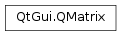
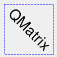

QMatrix¶
Synopsis¶
Functions¶
- def
__eq__(arg__1) - def
__imul__(arg__1) - def
__mul__(o) - def
__ne__(arg__1) - def
__reduce__() - def
__repr__() - def
determinant() - def
dx() - def
dy() - def
inverted() - def
isIdentity() - def
isInvertible() - def
m11() - def
m12() - def
m21() - def
m22() - def
map(a) - def
map(a) - def
map(l) - def
map(l) - def
map(p) - def
map(p) - def
map(p) - def
map(r) - def
map(x, y) - def
map(x, y) - def
mapRect(arg__1) - def
mapRect(arg__1) - def
mapToPolygon(r) - def
reset() - def
rotate(a) - def
scale(sx, sy) - def
setMatrix(m11, m12, m21, m22, dx, dy) - def
shear(sh, sv) - def
translate(dx, dy)
Detailed Description¶
The
PySide2.QtGui.QMatrixclass specifies 2D transformations of a coordinate system.A matrix specifies how to translate, scale, shear or rotate the coordinate system, and is typically used when rendering graphics.
PySide2.QtGui.QMatrix, in contrast toPySide2.QtGui.QTransform, does not allow perspective transformations.PySide2.QtGui.QTransformis the recommended transformation class in Qt.A
PySide2.QtGui.QMatrixobject can be built using thePySide2.QtGui.QMatrix.setMatrix(),PySide2.QtGui.QMatrix.scale(),PySide2.QtGui.QMatrix.rotate(),PySide2.QtGui.QMatrix.translate()andPySide2.QtGui.QMatrix.shear()functions. Alternatively, it can be built by applyingbasic matrix operations. The matrix can also be defined when constructed, and it can be reset to the identity matrix (the default) using thePySide2.QtGui.QMatrix.reset()function.The
PySide2.QtGui.QMatrixclass supports mapping of graphic primitives: A given point, line, polygon, region, or painter path can be mapped to the coordinate system defined by this matrix using thePySide2.QtGui.QMatrix.map()function. In case of a rectangle, its coordinates can be transformed using thePySide2.QtGui.QMatrix.mapRect()function. A rectangle can also be transformed into a polygon (mapped to the coordinate system defined by this matrix), using thePySide2.QtGui.QMatrix.mapToPolygon()function.
PySide2.QtGui.QMatrixprovides thePySide2.QtGui.QMatrix.isIdentity()function which returnstrueif the matrix is the identity matrix, and thePySide2.QtGui.QMatrix.isInvertible()function which returnstrueif the matrix is non-singular (i.e. AB = BA = I). ThePySide2.QtGui.QMatrix.inverted()function returns an inverted copy of this matrix if it is invertible (otherwise it returns the identity matrix). In addition,PySide2.QtGui.QMatrixprovides thePySide2.QtGui.QMatrix.determinant()function returning the matrix’s determinant.Finally, the
PySide2.QtGui.QMatrixclass supports matrix multiplication, and objects of the class can be streamed as well as compared.
Rendering Graphics¶
When rendering graphics, the matrix defines the transformations but the actual transformation is performed by the drawing routines in
PySide2.QtGui.QPainter.By default,
PySide2.QtGui.QPainteroperates on the associated device’s own coordinate system. The standard coordinate system of aPySide2.QtGui.QPaintDevicehas its origin located at the top-left position. The x values increase to the right; y values increase downward. For a complete description, see the coordinate system documentation.
PySide2.QtGui.QPainterhas functions to translate, scale, shear and rotate the coordinate system without using aPySide2.QtGui.QMatrix. For example:
 Although these functions are very convenient, it can be more efficient to build a
PySide2.QtGui.QMatrixand callQPainter.setMatrix()if you want to perform more than a single transform operation. For example:

Basic Matrix Operations¶

A
PySide2.QtGui.QMatrixobject contains a 3 x 3 matrix. Thedxanddyelements specify horizontal and vertical translation. Them11andm22elements specify horizontal and vertical scaling. And finally, them21andm12elements specify horizontal and vertical shearing .
PySide2.QtGui.QMatrixtransforms a point in the plane to another point using the following formulas:x' = m11*x + m21*y + dx y' = m22*y + m12*x + dyThe point (x, y) is the original point, and (x’, y’) is the transformed point. (x’, y’) can be transformed back to (x, y) by performing the same operation on the
PySide2.QtGui.QMatrix.inverted()matrix.The various matrix elements can be set when constructing the matrix, or by using the
PySide2.QtGui.QMatrix.setMatrix()function later on. They can also be manipulated using thePySide2.QtGui.QMatrix.translate(),PySide2.QtGui.QMatrix.rotate(),PySide2.QtGui.QMatrix.scale()andPySide2.QtGui.QMatrix.shear()convenience functions, The currently set values can be retrieved using thePySide2.QtGui.QMatrix.m11(),PySide2.QtGui.QMatrix.m12(),PySide2.QtGui.QMatrix.m21(),PySide2.QtGui.QMatrix.m22(),PySide2.QtGui.QMatrix.dx()andPySide2.QtGui.QMatrix.dy()functions.Translation is the simplest transformation. Setting
dxanddywill move the coordinate systemdxunits along the X axis anddyunits along the Y axis. Scaling can be done by settingm11andm22. For example, settingm11to 2 andm22to 1.5 will double the height and increase the width by 50%. The identity matrix hasm11andm22set to 1 (all others are set to 0) mapping a point to itself. Shearing is controlled bym12andm21. Setting these elements to values different from zero will twist the coordinate system. Rotation is achieved by carefully setting both the shearing factors and the scaling factors.Here’s the combined transformations example using basic matrix operations:
-
class
PySide2.QtGui.QMatrix¶ -
class
PySide2.QtGui.QMatrix(other) -
class
PySide2.QtGui.QMatrix(m11, m12, m21, m22, dx, dy) Parameters: - other –
PySide2.QtGui.QMatrix - m21 –
PySide2.QtCore.qreal - m11 –
PySide2.QtCore.qreal - dx –
PySide2.QtCore.qreal - m22 –
PySide2.QtCore.qreal - m12 –
PySide2.QtCore.qreal - dy –
PySide2.QtCore.qreal
Constructs an identity matrix.
All elements are set to zero except
m11andm22(specifying the scale), which are set to 1.See also
Constructs a matrix that is a copy of the given
matrix.Constructs a matrix with the elements,
m11,m12,m21,m22,dxanddy.See also
- other –
-
PySide2.QtGui.QMatrix.__reduce__()¶ Return type: PyObject
-
PySide2.QtGui.QMatrix.__repr__()¶ Return type: PyObject
-
PySide2.QtGui.QMatrix.determinant()¶ Return type: PySide2.QtCore.qrealReturns the matrix’s determinant.
-
PySide2.QtGui.QMatrix.dx()¶ Return type: PySide2.QtCore.qrealReturns the horizontal translation factor.
See also
PySide2.QtGui.QMatrix.translate()Basic Matrix Operations
-
PySide2.QtGui.QMatrix.dy()¶ Return type: PySide2.QtCore.qrealReturns the vertical translation factor.
See also
PySide2.QtGui.QMatrix.translate()Basic Matrix Operations
-
PySide2.QtGui.QMatrix.inverted()¶ Return type: PyTuple Returns an inverted copy of this matrix.
If the matrix is singular (not invertible), the returned matrix is the identity matrix. If
invertibleis valid (i.e. not 0), its value is set to true if the matrix is invertible, otherwise it is set to false.See also
-
PySide2.QtGui.QMatrix.isIdentity()¶ Return type: PySide2.QtCore.boolReturns
trueif the matrix is the identity matrix, otherwise returnsfalse.See also
-
PySide2.QtGui.QMatrix.isInvertible()¶ Return type: PySide2.QtCore.boolReturns
trueif the matrix is invertible, otherwise returnsfalse.See also
-
PySide2.QtGui.QMatrix.m11()¶ Return type: PySide2.QtCore.qrealReturns the horizontal scaling factor.
See also
PySide2.QtGui.QMatrix.scale()Basic Matrix Operations
-
PySide2.QtGui.QMatrix.m12()¶ Return type: PySide2.QtCore.qrealReturns the vertical shearing factor.
See also
PySide2.QtGui.QMatrix.shear()Basic Matrix Operations
-
PySide2.QtGui.QMatrix.m21()¶ Return type: PySide2.QtCore.qrealReturns the horizontal shearing factor.
See also
PySide2.QtGui.QMatrix.shear()Basic Matrix Operations
-
PySide2.QtGui.QMatrix.m22()¶ Return type: PySide2.QtCore.qrealReturns the vertical scaling factor.
See also
PySide2.QtGui.QMatrix.scale()Basic Matrix Operations
-
PySide2.QtGui.QMatrix.map(a)¶ Parameters: a – PySide2.QtGui.QPolygonFReturn type: PySide2.QtGui.QPolygonFThis is an overloaded function.
Creates and returns a
PySide2.QtGui.QPolygonFobject that is a copy of the givenpolygon, mapped into the coordinate system defined by this matrix.
-
PySide2.QtGui.QMatrix.map(r) Parameters: r – PySide2.QtGui.QRegionReturn type: PySide2.QtGui.QRegionThis is an overloaded function.
Creates and returns a
PySide2.QtGui.QRegionobject that is a copy of the givenregion, mapped into the coordinate system defined by this matrix.Calling this method can be rather expensive if rotations or shearing are used.
-
PySide2.QtGui.QMatrix.map(x, y) Parameters: - x –
PySide2.QtCore.qreal - y –
PySide2.QtCore.qreal
Maps the given coordinates
xandyinto the coordinate system defined by this matrix. The resulting values are put in *``tx`` and *``ty`` , respectively.The coordinates are transformed using the following formulas:
x' = m11*x + m21*y + dx y' = m22*y + m12*x + dy
The point (x, y) is the original point, and (x’, y’) is the transformed point.
See also
Basic Matrix Operations- x –
-
PySide2.QtGui.QMatrix.map(x, y) Parameters: - x –
PySide2.QtCore.int - y –
PySide2.QtCore.int
This is an overloaded function.
Maps the given coordinates
xandyinto the coordinate system defined by this matrix. The resulting values are put in *``tx`` and *``ty`` , respectively. Note that the transformed coordinates are rounded to the nearest integer.- x –
-
PySide2.QtGui.QMatrix.map(a) Parameters: a – PySide2.QtGui.QPolygonReturn type: PySide2.QtGui.QPolygonThis is an overloaded function.
Creates and returns a
PySide2.QtGui.QPolygonobject that is a copy of the givenpolygon, mapped into the coordinate system defined by this matrix. Note that the transformed coordinates are rounded to the nearest integer.
-
PySide2.QtGui.QMatrix.map(l) Parameters: l – PySide2.QtCore.QLineReturn type: PySide2.QtCore.QLineThis is an overloaded function.
Creates and returns a
PySide2.QtCore.QLineobject that is a copy of the givenline, mapped into the coordinate system defined by this matrix. Note that the transformed coordinates are rounded to the nearest integer.
-
PySide2.QtGui.QMatrix.map(p) Parameters: p – PySide2.QtGui.QPainterPathReturn type: PySide2.QtGui.QPainterPathThis is an overloaded function.
Creates and returns a
PySide2.QtGui.QPainterPathobject that is a copy of the givenpath, mapped into the coordinate system defined by this matrix.
-
PySide2.QtGui.QMatrix.map(l) Parameters: l – PySide2.QtCore.QLineFReturn type: PySide2.QtCore.QLineFThis is an overloaded function.
Creates and returns a
PySide2.QtCore.QLineFobject that is a copy of the givenline, mapped into the coordinate system defined by this matrix.
-
PySide2.QtGui.QMatrix.map(p) Parameters: p – PySide2.QtCore.QPointReturn type: PySide2.QtCore.QPointThis is an overloaded function.
Creates and returns a
PySide2.QtCore.QPointobject that is a copy of the givenpoint, mapped into the coordinate system defined by this matrix. Note that the transformed coordinates are rounded to the nearest integer.
-
PySide2.QtGui.QMatrix.map(p) Parameters: p – PySide2.QtCore.QPointFReturn type: PySide2.QtCore.QPointFThis is an overloaded function.
Creates and returns a
PySide2.QtCore.QPointFobject that is a copy of the givenpoint, mapped into the coordinate system defined by this matrix.
-
PySide2.QtGui.QMatrix.mapRect(arg__1)¶ Parameters: arg__1 – PySide2.QtCore.QRectFReturn type: PySide2.QtCore.QRectFCreates and returns a
PySide2.QtCore.QRectFobject that is a copy of the givenrectangle, mapped into the coordinate system defined by this matrix.The rectangle’s coordinates are transformed using the following formulas:
x' = m11*x + m21*y + dx y' = m22*y + m12*x + dy
If rotation or shearing has been specified, this function returns the bounding rectangle. To retrieve the exact region the given
rectanglemaps to, use thePySide2.QtGui.QMatrix.mapToPolygon()function instead.See also
PySide2.QtGui.QMatrix.mapToPolygon()Basic Matrix Operations
-
PySide2.QtGui.QMatrix.mapRect(arg__1) Parameters: arg__1 – PySide2.QtCore.QRectReturn type: PySide2.QtCore.QRectThis is an overloaded function.
Creates and returns a
PySide2.QtCore.QRectobject that is a copy of the givenrectangle, mapped into the coordinate system defined by this matrix. Note that the transformed coordinates are rounded to the nearest integer.
-
PySide2.QtGui.QMatrix.mapToPolygon(r)¶ Parameters: r – PySide2.QtCore.QRectReturn type: PySide2.QtGui.QPolygonCreates and returns a
PySide2.QtGui.QPolygonrepresentation of the givenrectangle, mapped into the coordinate system defined by this matrix.The rectangle’s coordinates are transformed using the following formulas:
x' = m11*x + m21*y + dx y' = m22*y + m12*x + dy
Polygons and rectangles behave slightly differently when transformed (due to integer rounding), so
matrix.map(QPolygon(rectangle))is not always the same asmatrix.mapToPolygon(rectangle).See also
PySide2.QtGui.QMatrix.mapRect()Basic Matrix Operations
-
PySide2.QtGui.QMatrix.__ne__(arg__1)¶ Parameters: arg__1 – PySide2.QtGui.QMatrixReturn type: PySide2.QtCore.boolReturns
trueif this matrix is not equal to the givenmatrix, otherwise returnsfalse.
-
PySide2.QtGui.QMatrix.__mul__(o)¶ Parameters: o – PySide2.QtGui.QMatrixReturn type: PySide2.QtGui.QMatrixReturns the result of multiplying this matrix by the given
matrix.Note that matrix multiplication is not commutative, i.e. a*b != b*a.
-
PySide2.QtGui.QMatrix.__imul__(arg__1)¶ Parameters: arg__1 – PySide2.QtGui.QMatrixReturn type: PySide2.QtGui.QMatrixThis is an overloaded function.
Returns the result of multiplying this matrix by the given
matrix.
-
PySide2.QtGui.QMatrix.__eq__(arg__1)¶ Parameters: arg__1 – PySide2.QtGui.QMatrixReturn type: PySide2.QtCore.boolReturns
trueif this matrix is equal to the givenmatrix, otherwise returnsfalse.
-
PySide2.QtGui.QMatrix.reset()¶ Resets the matrix to an identity matrix, i.e. all elements are set to zero, except
m11andm22(specifying the scale) which are set to 1.See also
PySide2.QtGui.QMatrix.QMatrix()PySide2.QtGui.QMatrix.isIdentity()Basic Matrix Operations
-
PySide2.QtGui.QMatrix.rotate(a)¶ Parameters: a – PySide2.QtCore.qrealReturn type: PySide2.QtGui.QMatrixRotates the coordinate system the given
degreescounterclockwise.Note that if you apply a
PySide2.QtGui.QMatrixto a point defined in widget coordinates, the direction of the rotation will be clockwise because the y-axis points downwards.Returns a reference to the matrix.
See also
-
PySide2.QtGui.QMatrix.scale(sx, sy)¶ Parameters: - sx –
PySide2.QtCore.qreal - sy –
PySide2.QtCore.qreal
Return type: Scales the coordinate system by
sxhorizontally andsyvertically, and returns a reference to the matrix.See also
- sx –
-
PySide2.QtGui.QMatrix.setMatrix(m11, m12, m21, m22, dx, dy)¶ Parameters: - m11 –
PySide2.QtCore.qreal - m12 –
PySide2.QtCore.qreal - m21 –
PySide2.QtCore.qreal - m22 –
PySide2.QtCore.qreal - dx –
PySide2.QtCore.qreal - dy –
PySide2.QtCore.qreal
Sets the matrix elements to the specified values,
m11,m12,m21,m22,dxanddy.Note that this function replaces the previous values.
PySide2.QtGui.QMatrixprovide thePySide2.QtGui.QMatrix.translate(),PySide2.QtGui.QMatrix.rotate(),PySide2.QtGui.QMatrix.scale()andPySide2.QtGui.QMatrix.shear()convenience functions to manipulate the various matrix elements based on the currently defined coordinate system.See also
PySide2.QtGui.QMatrix.QMatrix()- m11 –
-
PySide2.QtGui.QMatrix.shear(sh, sv)¶ Parameters: - sh –
PySide2.QtCore.qreal - sv –
PySide2.QtCore.qreal
Return type: Shears the coordinate system by
shhorizontally andsvvertically, and returns a reference to the matrix.See also
- sh –
-
PySide2.QtGui.QMatrix.translate(dx, dy)¶ Parameters: - dx –
PySide2.QtCore.qreal - dy –
PySide2.QtCore.qreal
Return type: Moves the coordinate system
dxalong the x axis anddyalong the y axis, and returns a reference to the matrix.See also
- dx –
© 2018 The Qt Company Ltd. Documentation contributions included herein are the copyrights of their respective owners. The documentation provided herein is licensed under the terms of the GNU Free Documentation License version 1.3 as published by the Free Software Foundation. Qt and respective logos are trademarks of The Qt Company Ltd. in Finland and/or other countries worldwide. All other trademarks are property of their respective owners.